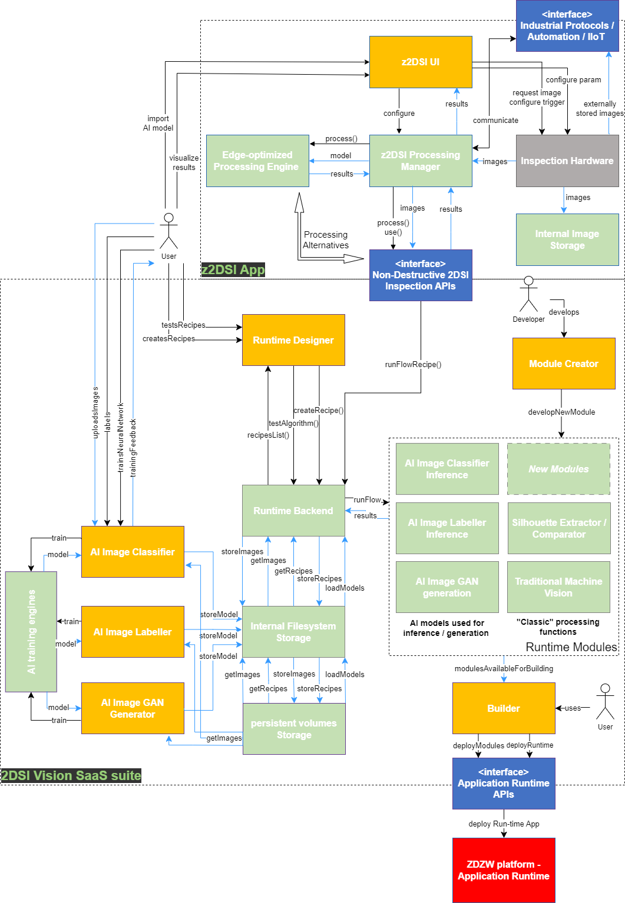
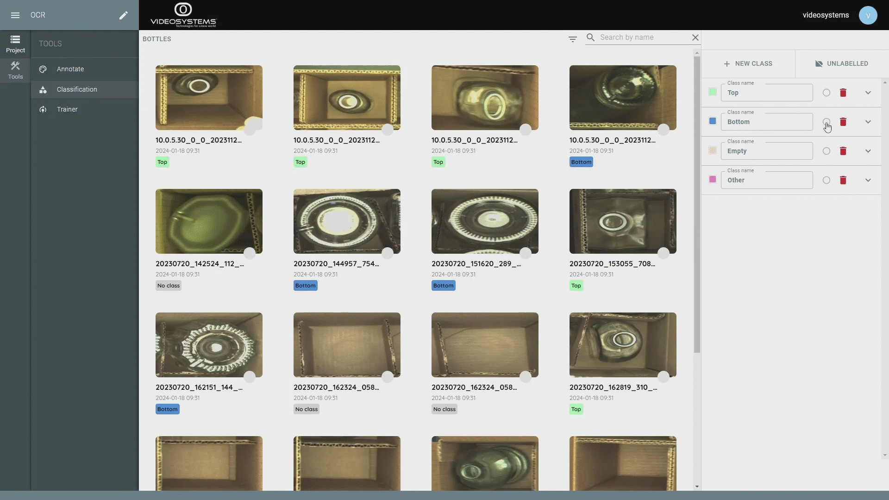
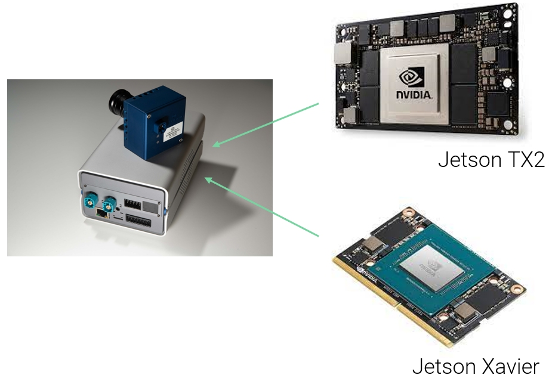

2D Surface Inspector
General Description
The 2D Surface Inspector (2DSI) is an app that enables acquisition and analysis of 2D camera images to assess the quality and conformity of products in high throughput industrial production lines, controlling dimensional shapes of extracted features, and/or detecting anomalies in the product surface.
To comply with high inspection rates, high-speed frame rate acquisition cameras are used, and the image analysis algorithms can be optimized and deployed on edge processing units based on GPUs, which allow the exploitation of Artificial Intelligence models for run-time quality inspection.
Linked to this, a suite of web-based services, eventually offered with in-cloud flavour (SaaS), covers from the design and test of use case-based processing flows down to the (re-)training of AI neural networks for classification, defect detection, image generation, based on the acquired and annotated datasets, eventually extended with artificially generated ones.
Video Systems (VSYS) is the only partner responsible of the app.
Top Ten Functionalities
- High speed camera acquisition: Possibility to acquire images of more than 1000 parts/minute, to cope with high-throuput production lines. This is a crucial requirement in many manufacturing scenarios, to be able to inspect in-line 100% parts for ZD production.
- Edge processing unit based on GPUs, and AI optimization (inference, generation) based on it: Development of new (wrt to Video Systems' background) edge processing units integrating with nVidia Jetson platform GPUs: the goal is to host into a compact embedded system the possibility to run AI trained models in an optimized acceleration framework, so to be able to inspect with AI-based technology (object detection, classification, ...) 100% parts of high-throughput production lines.
- Edge devices industrial protocols capabilities (OPCUA, MODBUS IP) and automation signals: To facilitatate in-plant integration, the vision inspection system needs to support not only I/O signals but also most common industrial communication standards and protocols, like MODBSU TCP/IP and OPC UA.
- IIoT edge devices communication (MQTT, AMQP) and acquired image streaming: To extend industrial communication capabilities in the frame of IIoT, messaging protocols like MQTT and AMQP are mandatory to facilitate integration betwwen devices and cloud services. High-rate acquired images are also available as a network stream service.
- Contours/features extraction and visualization for dimensional conformity and shape controls: Libraries and functionalities to extract contours or specific features from the image of the product are the core of the application as they allow dimensional analysis and conformity and/or detection of anomalies.
- Cloud based annotating and AI training tools (classification, annotation, generation): A suite of AI tools for classification, annotation and generation will be built based on separation of frontend (React based web interfaces) and backend (Restful http based open API). This will facilitate the deployment and integration of services into ZDZW platform, in particular once the transfer from docker technology to Kubernets will take place.
The whole workflow will be covered for each type of AI service, starting from classification/annotation, managing the training phase, ending with inference/generation of batched data to test the trained networks. - GAN based anomaly detection and data augmentation: GAN (Generative Adversarial Networks) will also be part of AI services ecosystem, as they can be naturally expolited for anomaly detection but also for data augmentation when the number of defected parts is low and augmentation is welcome to improve the training phase.
- Supervised and semi-supervised anomaly detection AI techniques: Supervised AI techniques deal with classification, object detection and segmentation to extract features and/or defects: they request an annotation/classification phase, where defects/classes should be confirmed/annotated by inspection experts using a web-based service.
Semi-supervised techniques for anomaly detection involve the use of networks trained only on non-defective parts (representing normal operating conditions), so that anomalous conditions can also be identified in newly inspected images. - Ease to deploy AI trained models in a SaaS scheme: Once AI models have been properly trained and tested, they can be saved/exported and furtherly deployed for final inspection. The deployment of models can be optimized to be on an edge unit (see functionality 2) for in-line and real time high speed inspection, but can aslo be exploited as a cloud service in an SaaS (Software-as-a-Service) scheme: in the latter case, the AI web-based inference service can be used or its backend can be interrogated through open API end points, or as an alternative, the model can be included in a more complex algortihm flow design through the utilization of the so-called inference blocks in the AV Designer service (functionality 10)
- Ease to design and deploy Artificial Vision algorithms in a SaaS scheme: Last functionality deals with the possibility to design and test AV algorithm using a web interface, by connecting inputs and outputs of processing functions represented as blocks in a diagram canvas, in order to graphically prepare a complete processing flow: once saved as an algorithm, it can be re-used to run inspections through RESTful calls to the runtime backend of this service, which acts as a cloud processing engine. Also AI models once trained can be exported and used in this schema through so-called inference blocks (see functionality 9).
Architecture Diagram
The Figure represents the high level architecture diagram of the 2D Surface Inspector application. 
The solution has been divided in two macro-areas:
- 2DSI Vision SaaS suite: it covers all the software design services, which can run on-cloud and are handled by web-based frontend interfaces, including AI services of classification, annotation, generation of images and training of related models
- z2DSI App: it is the in-line surface inspecting system, an edge acquisition and processing unit, where optimized inspecting algorithms and AI models are finally deployed
2DSI Vision SaaS suite is composed of the following modules:
-
Runtime Designer: The Designer is a user interface used by users to develop and debug Computer Vision algorithms. The Designer displays the list of Runtime Modules’ functions as building blocks, and a flow can be created from these blocks; this flow can be tested with offline images/data through the Runtime Backend and saved as a recipe in the Internal Filesystem Storage.
-
Runtime Backend: this component receives the processing requests from the Runtime Designer and/or the Non-Destructive Inspection APIs and orchestrates the flow to sequentially call the Runtime Modules’ functions. It also accesses the Internal Filesystem Storage to access recipes, trained models, and images, and it forwards them to the correct functions.
-
Internal Filesystem Storage: private high-speed space to store images, trained models, and recipes; it is accessible from user interface. It builds upon the system level Storage based on persistent volumes data.
-
persistent volumes Storage: low level storage area reserved at deployment.
-
Runtime Modules: this box in the diagram encapsulates a set of Computer Vision standalone modules; a module is a package that contains a list of processing functions in a common subdomain, like Artificial Intelligence, Silhouette analysis, and Traditional Machine Vision. These modules are managed by the Runtime Backend. New modules can be developed with the use of the Module Creator. Follows a list of some Runtime Modules (divided in AI modules and “Classic” modules) that are used to build quality inspection applications:
-
Silhouette Extractor / Comparator: to extract significant product contours from digital images as a function of search processing input; to make a parametrised comparison of two contours, one usually extracted from in-field and another typically coming from a reference image or an ideal shape (circle, rectangle, …).
-
Traditional Machine Vision: this module includes classical machine vision techniques for image pre-processing and features extraction, like contour analysis, blob analysis, histogram analysis, morphological and geometric transformations, thresholding, etc.
-
AI Image Classifier Inference: this module runs the inference using classification models trained through the AI Image Classifier service.
-
AI Image Labeller Inference: this module runs the inference using annotation models trained through the AI Image Labeller service.
-
AI Image GAN generation: this module runs the image generation using GAN models trained through the AI Image GAN Generator service.
-
-
Module Creator: this user interface is used to develop new modules to be added to the Runtime Modules. New modules can be developed when new Computer Vision techniques are published by the community.
-
Builder: this user interface is used to deploy an instance of the Runtime with the selected modules. It communicates with the Application Runtime APIs to deploy the new Runtime.
-
Non-Destructive 2DSI Inspection APIs: this interface is used by zApps or other applications/solutions to run Computer Vision algorithms with runtime or historic data.
-
Application Runtime APIs: an integration with the Application Runtime (Kubernetes) of the ZDZW platform is implemented to allow the dynamic provisioning of a selection of available modules or newly developed (through the Module Creator) ones resulting into a dynamic (size-controlled) installation of a Runtime instance (via the Builder).
z2DSI App is more focused on the functionalities of the edge processing unit; it is composed of the following modules:
-
z2DSI UI: this web-based interface allows to configure image acquisition parameters (acquisition trigger mode, capture exposure time, programmable illuminator, …) as well as processing parameters and communication settings; it allows to control basic operation of the system, also visualizing raw images and results.
-
z2DSI Processing Manager: it is the core of the embedded system, orchestrating the main data flow, firstly the image processing (two processing schemas: through GPUs-optimized AI model deployment or exploiting the SaaS interface of the 2DSI), secondly the external communication of results/alerts, through industrial standard protocols, automation signals and IIoT message publishing and listening.
-
Edge-optimized Processing Engine: it processes captured images, exploiting GPUs acceleration for inference/generation of previously trained AI models.
-
Inspection Hardware: this block comprises the in-field hardware, mainly the image sensor head, and the illumination device; captured images can be configured to be saved externally (shared space) or internally.
-
Internal Image Storage: an internal area for image storage, accessible from outside.
-
Industrial Protocols / Automation / IIoT: this deals with possible data exchange with external systems, mainly communication with PLCs, PCs, and IIoT messages.
Image Overview

The typical flow of preparing a supervised AI model includes the phase of classifying images, or annotating and classifying features inside them using an annotation tool, the training phase, and finally the phase of using the model on a test dataset to validate its performance: the 2DSI suite of web-based tools covers all these operations. The graphical design tool to build machine vision algorithms is also shown.
Hardware Components
Referring to the z2DSI App block of the architectural diagram, the in-field hardware components required to realise a complete inline inspection application are mainly the Video Systems image sensor and the Video Systems edge unit: the latter is an embedded server, called Ingenium®, based on a real-time Linux OS, to manage image acquisition and processing. A new redesign of the edge unit involves the hardware integration with NVIDIA® Jetson™ GPU platform, to optimize the execution of AI models, ultimately increasing the frequency of images that can be processed to enable 100% inspection on high production lines. 
Full archiving of captured images can be supported by saving images on a shared network space of an appropriate size.
Computation Requirements
Here follow details about typical recommended requirements for the standalone installation and operation of on-line services, the ones under 2DSI Vision SaaS suite in the architectural diagram, having in mind the computational needs of the trainig phase of the AI services.
- OS: XUbuntu 23.x
- CPU: 2.30GHz × 16 (i7 11G)
- RAM: 32 GB
- Storage: > 512 GB
- GPU: NVIDIA RTX A2000
Installation Procedure
The instructions for installing the app will be defined once the application has been completed.
How To Use
The instructions for using the app will be defined once the application has been completed.
Additional Learning Materials
Links to other learning materials like youtube tutorials will be added once the application has been completed.